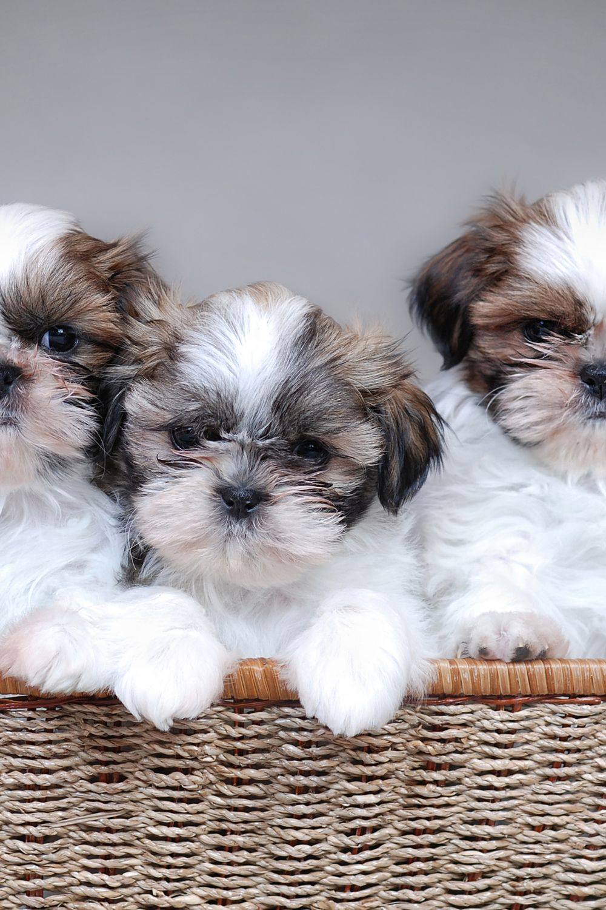
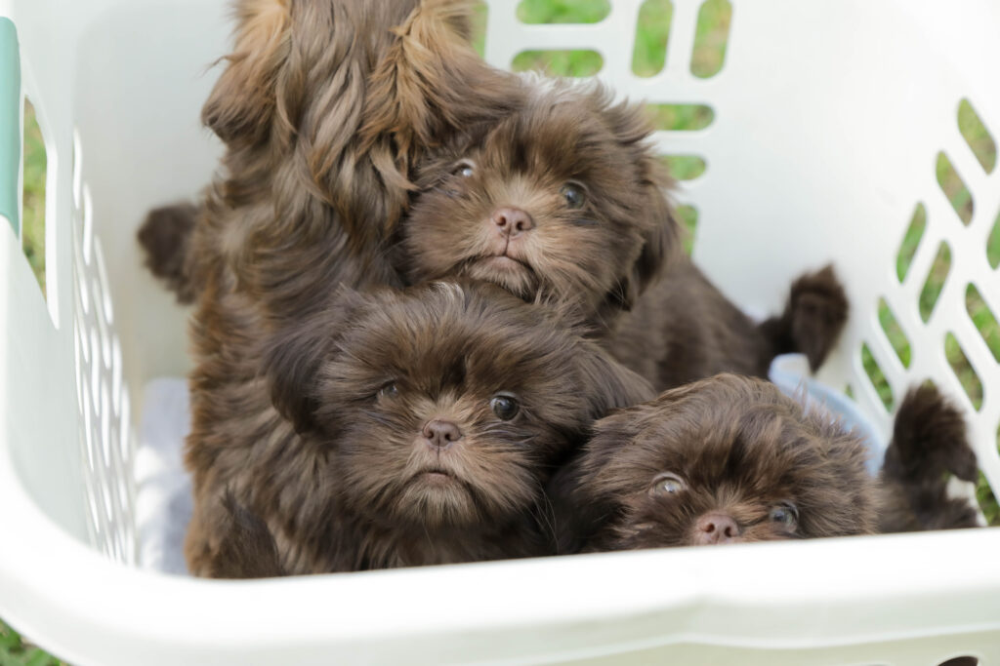

Habits
Shih Tzu habits include being affectionate and clingy with their owners, preferring indoor play over strenuous exercise, being prone to nuisance barking at triggers like sounds or passing people, enjoying digging, and requiring consistent grooming due to their long hair. They sleep A LOT and can tend to have some separation anxiety. They relish attention and do whatever they can to get it, whether that means pushing themselves into cute positions or knawing at their owner constantly for attention.
Zoomies
Yes, Shih tzu zoomies are so unique they need its own section. If unfamiliar with,"zoomies" what they are is when a dog or animal randomly burts into exctired play mode. With Shih tzus they randomly burst into excitment and drive whoever their owner crazy. They build up this feeling from the lazy nature of the breed. The breed usually spends their time laying around doing literally nothing, trying to soak up everyones attention from their cuteness.
Main traits
